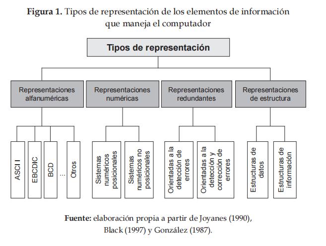
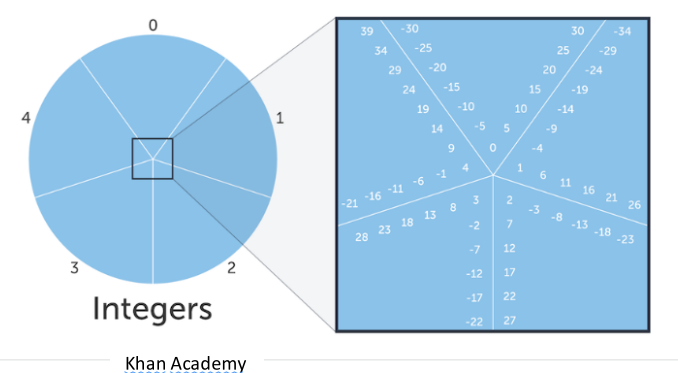
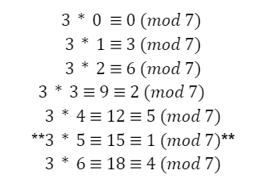
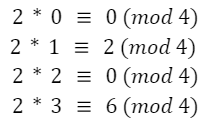

Aritmética de Residuos
Sistemas numéricos
La información es uno de los recursos más valiosos para la civilización actual. Puede ser gestionada, modificada, comercializada y transmitida. Sin embargo, para que esto sea posible, es necesario manipular los datos mediante representaciones que van desde símbolos, gráficos hasta diversos tipos de diseño.
La información, como recurso, es crucial porque las computadoras operan con dos tipos de elementos informativos: instrucciones y datos. Estos elementos pueden presentarse de diversas formas a nivel máquina, determinando así las características de funcionamiento y la estructura del sistema.
Además, es esencial estudiar los sistemas de representación de información para comprender los procesos de manejo de datos. Por esta razón, existe la siguiente clasificación:

Coronado, J. (2014)
Es importante señalar que la representación numérica tiene gran influencia en la arquitectura de las máquinas, ya que es fundamental para la codificación de cantidades y la organización de la aritmética computacional.
No obstante, investigaciones recientes han demostrado que los sistemas numéricos posicionales no son suficientes para lograr un aumento significativo en la velocidad de procesamiento de la información, ni para mejorar los niveles de desempeño y productividad. Además, los acarreos generados durante la ejecución de sus operaciones aumentan la complejidad del sistema y requieren más hardware para su procesamiento.
Por ello, se han explorado alternativas en sistemas numéricos "no posicionales". Estos sistemas, como la aritmética modular o aritmética de residuos, han surgido como opciones viables que no generan acarreos.
Aritmética de residuos
La aritmética residual, también conocida como aritmética modular o aritmética de congruencia, es un área de las matemáticas que se centra en el estudio de los números enteros en relación con un número fijo llamado módulo. Esta área tiene aplicaciones prácticas en campos como la criptografía, la informática, la teoría de números y la ingeniería.
La aritmética modular se enfoca en cómo se comportan los números enteros cuando los consideramos en grupos de tamaño fijo determinado por el módulo. Por ejemplo: si consideramos los números enteros módulo 5, estamos agrupando todos los enteros en cinco conjuntos diferentes, según su residuo al dividirlos por 5.
Esta área del conocimiento permite realizar las operaciones aritméticas: suma, resta y multiplicación, excepto la división, que son procedimientos sin acarreos.
Congruencia
La aritmética residual se basa en el concepto de congruencia, que es fundamental para entender cómo funciona. Dos números enteros a y b se consideran congruentes módulo m, denotado como: a≡b (mod m), si su diferencia a−b es un múltiplo de m. En otras palabras, a y b tienen el mismo residuo cuando se dividen por m.
a≡b (mod m)
Por ejemplo, si tomamos los números enteros 7 y 17, ambos son congruentes módulo 5, ya que su diferencia es 17−7=10, que es un múltiplo de 5.
Asimismo, una de las ventajas de trabajar con este concepto es la posibilidad de manejar clases de equivalencia de números enteros. En lugar de operar con números individuales, operamos con clases de números que comparten el mismo residuo módulo m. Estas clases se conocen como clases de congruencia y están formadas por todos los números enteros que son congruentes entre sí.
Para comprender mejor el concepto de congruencia y las clases de congruencia con el siguiente ejemplo:
Si calculamos mod 5 para todos los enteros. Se suponen 5 clasificaciones de acuerdo al residuo (0,1,2,3,4) para cada número.

Khan Academy (2024)
Así 27 iría en la rebanada etiquetada con el número 2 porque 27 (mod 5) = 2 y para expresar los números que pertenecen a la misma rebanada que el 27, es decir de la misma clase de congruencia, se usa la expresión:
a ≡ b (mod m)
Ejemplo:
26 ≡ 11 (mod 5)
26 es congruente a 11 módulo 5
26 (mod 5) = 1
11 (mod 5) = 1
26 y 11 tienen el mismo residuo, tienen la misma clase de congruencia.
Operaciones básicas
Suma: Para sumar dos números en aritmética residual, simplemente sumamos los números y tomamos el residuo cuando dividimos por m.
Ejemplo:
Calcular 7 + 6 (mod 5):
Suma los números: Comienza sumando los dos números que deseas operar. En este caso, sumamos 7 y 6 para obtener 13.
Toma el residuo: Después de sumar los números, necesitas tomar el residuo cuando divides el resultado entre el módulo, que en este caso es 5. Entonces, divide 13 entre 5.
Calcula el residuo: La división de 13 entre 5 te dará un cociente de 2 y un residuo de 3.
El resultado final de 7 + 6 (mod 5) es 3.
Resta: Similar a la suma, para restar dos números en aritmética residual, restamos uno del otro y tomamos el residuo.
Ejemplo:
Calcular 8 − 2 (mod5):
Resta los números: Comienza restando el segundo número del primero. En este caso, restamos 2 de 8 para obtener 6.
Verifica si es divisible por el módulo: Después de restar los números, verifica si el resultado es divisible por el módulo, que en este caso es 5.
Comprueba la divisibilidad: Al restar 2 de 8, obtenemos 6, que es divisible entre 5.
El resultado final de 8 - 3 (mod 5) es 1.
Multiplicación: Para multiplicar dos números en aritmética residual, multiplicamos los números y luego tomamos el residuo.
Ejemplo:
Calcular 4×3(mod5):
Multiplica los números: Comienza multiplicando los dos números dados. En este caso, multiplica 4 por 3 para obtener 12.
Verifica el residuo con el módulo: Después de obtener el resultado de la multiplicación, verifica el residuo cuando divides este número entre el módulo especificado, que es 5.
Calcula el residuo: Al dividir 12 entre 5, obtenemos un cociente de 2 y un residuo de 2.
Por lo tanto, el resultado final de 4 × 3 (mod 5) es 2.
Inverso modular
En aritmética modular no existe una operación de división. Sin embargo, sí hay inversos modulares.
El inverso modular de a (mod m) es a-1
(a* a-1) ≡ 1 (mod m)
o de otra forma
(a* a-1 ) mod m = 1
Sólo los primos relativos de m, que no comparten factores primos con m, tienen inverso modular (mod m)
Procedimiento:
1) Calcula a*b mod m para los valores b entre 0 y m-1
2) El inverso modular de a (mod m) es el valor b que hace que se cumpla que a*b (mod m) = 1
Ejemplo:
Para a = 3, m = 7
1) Encontrar a b que esté entre 0 y m-1, en este caso b está entre 0 y 6

2) Una vez encontrado el número que cumple con la condición a*b (mod m) = 1 se puede decir que se tiene el inverso modular, en este caso 5, ya que:
5*3 (mod 7) = 1
Es importante tener en cuenta hay la posibilidad de que no exista el inverso modular, ya que a y m tienen que ser primos relativos.
Ejemplo:
Para a= 2 y m = 4
1) Encontrar a b que esté entre 0 y m-1, en este caso b está entre 0 y 3

2) En este caso no se encuentra el inverso modular, ya que 2 y 4 no son primos relativos, comparten el factor 2.
Teorema de los restos chinos
El teorema de los restos chinos es un resultado de la aritmética modular, que permite resolver sistemas de congruencias lineales.
El Teorema de los Restos Chinos, es llamado así, debido a que las versiones más antiguas sobre estos problemas de congruencias se encuentran en trabajos matemáticos chinos.
El problema más antiguo se encuentra en el texto Sun Zi Suan Ching (Manual de Matemática de Sun Zi) escrito aproximadamente en el siglo III por el matemático chino Sun Zi, y corresponde al problema 26.
El enunciado del problema de Sun Zi es el siguiente:
Tenemos un número de cosas, pero no sabemos exactamente la cantidad. Si las contamos de a tres, quedan dos sobrando. Si las contamos de a cinco, quedan tres sobrando. Si las contamos de a siete, quedan dos sobrando. ¿Cuántas cosas pueden ser?
A continuación se describe la solución dada por Sun Zi en su obra:
Determinó que se podía resolver usando los números 70, 21 y 15, que eran múltiplos de 5*7, de 3*7 y de 3*5 respectivamente.
Observó que la suma 2*70 + 3*21 + 2*15 igual a 233, es una solución del problema.
Luego, restó a 233 múltiplos de 3*5*7 tantas veces como fuera posible, obteniendo el número 23, siendo este número el menor entero positivo que resuelve el problema.
Teorema
Sean k números naturales m1, m2, ..., mk primos relativos dos a dos, y sean k números enteros r1, r2, ..., rk. El sistema de congruencias:
x ≡ r1 (mod m1)
x ≡ r2 (mod m2)
…
x ≡ rk (mod mk)
Admite solución única módulo M = m1 m2 ... mk. Es decir, existe un único número entero s entre 0 y M-1 que resuelve simultáneamente a todas las congruencias del sistema.
Demostración
Sea Mi = M ÷ mi para i = 1, 2, …, k.
a) Para cada i = 1, 2, …, k:
- Mi y mi son primos relativos entre sí.
- Luego, existe ui tal que uiMi ≡ 1 (mod mi)
- Y se cumple: u1M1r1 + u2M2r2 + ... + ukMkrk ≡ ri (mod mi)
b) Por lo tanto:
X = u1M1r1 + u2M2r2 + ... + ukMkrk es una solución del sistema de congruencias.